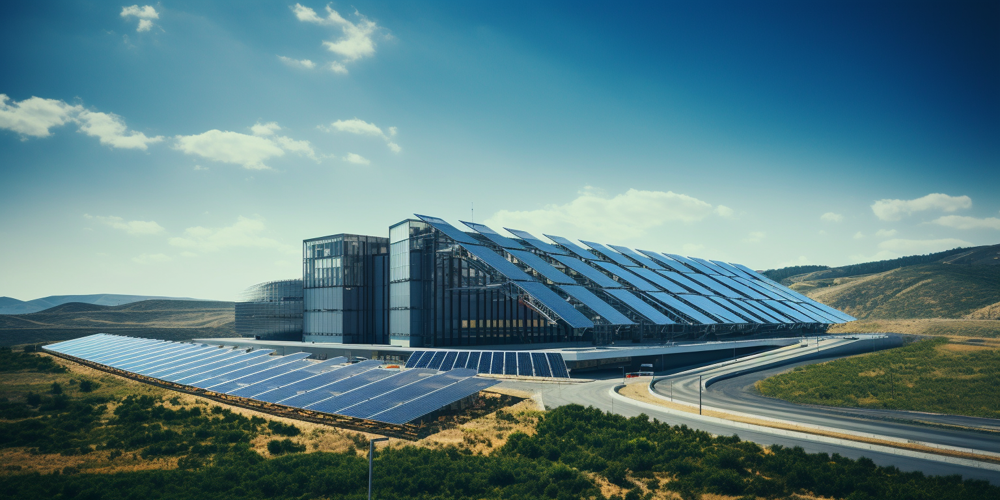
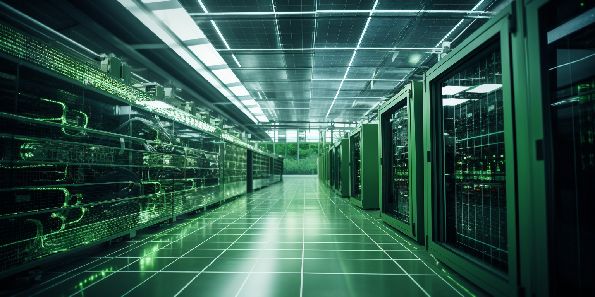
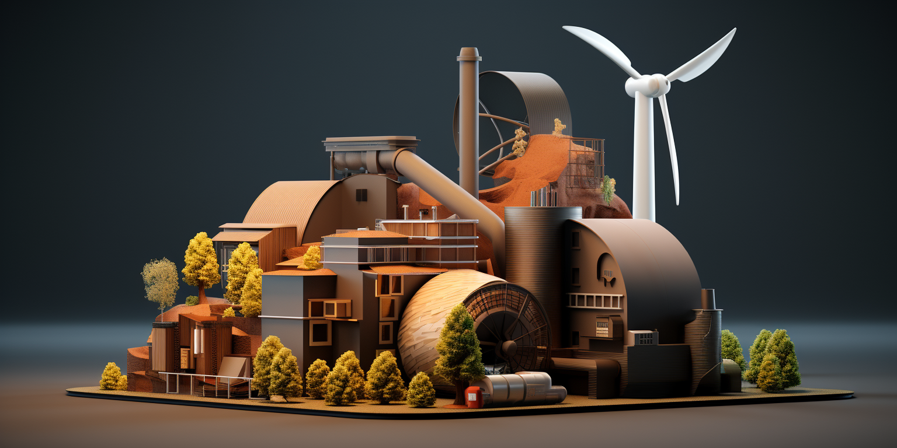
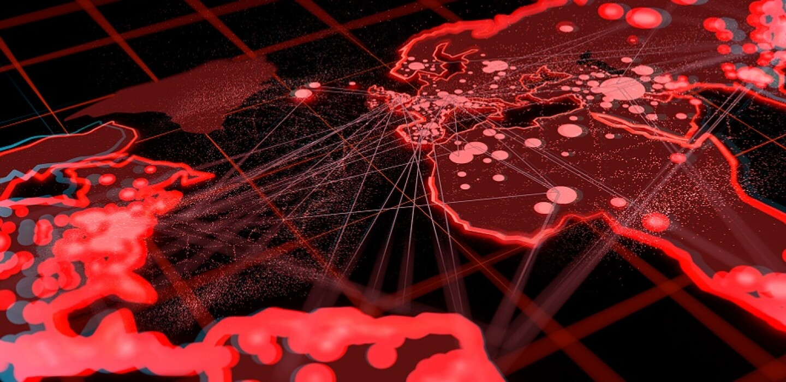

Introduction: Rethinking Datacenter Design in the AI Era
In an era where artificial intelligence is reshaping our technological landscape, it’s imperative to reconsider how we design and operate datacenters.
Over the last 30 years, datacenter construction has largely remained static, following a traditional model that is increasingly proving inadequate in the face of modern demands.
This approach has seen power requirements rise modestly from 5 kW to around 15 kW per rack – a figure that barely scratches the surface of what is needed today.
Contemporary datacenters, with their focus on real estate, risk becoming obsolete if they continue to neglect evolving needs.
As we stand at this technological crossroads, the urgency to adapt is clear: unless we pay close attention, new datacenters risk repeating the inefficiencies of their predecessors, leading to a poor utilization of investments and a significant mismatch with current and future requirements.
The 2 Main Design Flaws of Current Datacenters
Inadequate Power Provision
The advent of AI has dramatically escalated power needs. An AI-centric rack can consume up to 200 kW – a staggering 15 times more than the capacity of datacenters built in the conventional mold. This exponential increase poses significant challenges, particularly when dissipation exceeds 50 kW per rack. Traditional designs fall short in crucial aspects like cooling and power distribution, with conventional air cooling methods becoming increasingly unviable.
The Shift in Market Needs: Beyond Co-location
The market dynamics have evolved; selling space in a datacenter, akin to ‘advanced real estate’, is a model that’s rapidly losing relevance. The traditional co-location framework, which expects customers to manage their hardware and infrastructure within leased rack space, is becoming antiquated.
In the modern landscape, the role of a datacenter should transcend mere space rental. The emphasis should be on providing integrated solutions – selling compute, storage, and network capacity, not just rackspace and power. It’s about delivering a comprehensive service that aligns with the complex, ever-evolving needs of businesses immersed in the digital and AI revolution.
Conclusion
In conclusion, the dawn of AI demands a paradigm shift in how we conceive and build datacenters. It's no longer sufficient to adhere to the status quo. The future of datacenters lies in acknowledging and adapting to these emerging challenges – both in power consumption and service delivery. As the world moves forward, so must our approach to datacenter design and operation, transitioning from traditional real estate models to becoming dynamic hubs of technology and service provision.

History
Tier 3 and 4 following Uptime Institute
The Uptime Institute is an organization that establishes standards and provides certifications for data center reliability and overall design.
- They developed the tier classification system that defines levels of redundancy and uptime for data centers, ranging from Tier 1 (basic) to Tier 4 (fault tolerant). This provides an industry standard for comparing data center resiliency.
- Their Tier Standards and Topology define specific availability and redundancy requirements for different data center subsystems at each tier level. This provides design guidance for engineers and architects aiming to build reliable facilities.
Tier 3
A Tier 3 data center is a type of data center facility that is designed to provide a high level of availability and redundancy for IT infrastructure and data storage. Tier 3 data centers are classified based on the Uptime Institute's Tier Classification System, which defines four tiers (Tier 1, Tier 2, Tier 3, and Tier 4) to categorize data centers according to their design and infrastructure capabilities.
Key characteristics of a Tier 3 data center include:
-
Availability: A Tier 3 data center is designed to ensure 99.982% availability, which means it allows for an annual downtime of no more than 1.6 hours. This high level of availability is achieved through redundant components and systems.
-
Redundancy: Tier 3 data centers feature redundant power and cooling systems, as well as multiple distribution paths for data. Redundancy ensures that if one component or system fails, there is an alternative in place to maintain operations without disruption.
-
Concurrent Maintainability: A Tier 3 data center allows for maintenance and repairs to be performed on infrastructure components without affecting the normal operation of the data center. This is achieved through the use of redundant systems and pathways.
-
Security: Security measures are typically in place to protect the data center against unauthorized access, including physical security, access controls, and surveillance systems.
-
Scalability: Tier 3 data centers are designed to accommodate growth and expansion of IT infrastructure, making them suitable for businesses with evolving needs.
-
High-Level Performance: These data centers offer high-speed connectivity, low-latency network connections, and advanced monitoring and management capabilities.
It's important to note that while Tier 3 data centers provide a high level of availability and redundancy, they are not as robust as Tier 4 data centers, which are designed to provide even higher levels of fault tolerance and uptime. The choice of data center tier depends on the specific needs and risk tolerance of the organization using the facility.
Power Requirements
-
Standard Range: Typically, the power availability per rack in a Tier 3 data center ranges from 4 kW to 10 kW. This range is sufficient for most traditional computing needs.
-
High-Density Options: For more demanding applications, such as high-performance computing or for racks densely packed with servers, Tier 3 data centers may offer high-density zones where power availability can range from 10 kW to 20 kW or more per rack.
-
Cooling Limitations: The upper limit on power availability is often determined by the data center’s cooling capacity. As power density increases, so does the heat output, which must be effectively managed by the data center’s cooling systems.
-
Custom Solutions: Some data centers can customize power availability based on client needs. This can include providing additional power circuits or designing a specific area of the data center with a higher power capacity.
-
Redundancy: Since Tier 3 data centers offer N+1 redundancy, there is always at least one backup for each power component. This does not directly affect the power available per rack, but it ensures consistent availability of the supplied power.
-
Scalability: Many Tier 3 data centers are designed to allow scaling of power and cooling resources as the needs of the customers grow.
When a business is considering colocation or hosting in a Tier 3 data center, it's important to assess its power requirements carefully. For operations with high power demands, it might be necessary to discuss with the data center provider the possibilities of allocating additional power resources or choosing a high-density zone within the data center. Data center providers typically measure power in kilowatts (kW) per rack and will have different pricing models based on the power and cooling requirements of the equipment hosted.
Tier 4
A Tier 4 data center is the most advanced type of data center tier, as classified by the Uptime Institute. These tiers are a standardized methodology used to determine availability in a facility. The Tier 4 data center is the most robust and less prone to failures. Its design ensures redundancy and reliability.
Tier 4 Data Center:
- Uptime: Designed for 99.995% availability.
- Redundancy: 2N+1 fully redundant infrastructure (the highest level of redundancy in a data center).
- Components: All components are fully fault-tolerant including uplinks, storage, chillers, HVAC systems, servers etc.
- Cooling: Fully redundant cooling equipment.
- Concurrent Maintainability: Everything can be maintained concurrently.
- Fault Tolerance: Fully fault-tolerant with the ability to sustain at least one worst-case scenario fault without impacting critical load.
- Power Paths: Multiple active power distribution paths.
- Downtime: Approximately 0.4 hours of downtime annually.
- Target Audience: Ideal for mission-critical operations such as large financial institutions, government data processing centers, and other high-demand networks.
Key Differences:
- Redundancy: Tier 4 offers 2N+1 redundancy, meaning there is a double system for power and cooling (plus an additional backup), while Tier 3 typically offers N+1.
- Fault Tolerance: Tier 4 is fully fault-tolerant, meaning that any single failure of components does not impact services, unlike Tier 3.
- Power Paths: Tier 4 data centers have multiple active power paths, whereas Tier 3 has multiple paths but only one active at a time.
- Downtime: Tier 4 data centers have significantly less downtime per year compared to Tier 3.
- Cost and Complexity: Building and maintaining a Tier 4 data center is significantly more expensive and complex than a Tier 3 facility.
Choosing Between Them:
- Cost vs. Need: Tier 4 data centers are significantly more expensive to build and operate. Organizations should assess whether they need the highest level of uptime and fault tolerance that Tier 4 provides.
- Business Requirements: Businesses that can afford occasional downtimes for maintenance or those that don't have extremely critical data operations may find Tier 3 facilities adequately sufficient.
- Industry Compliance: Certain industries may require or favor Tier 4 facilities due to regulatory requirements.
In summary, while both Tier 3 and Tier 4 data centers are designed to ensure high levels of uptime and reliability, Tier 4 takes this a step further with increased redundancy, fault tolerance, and a correspondingly higher price point.
Ideas
This section describes some ideas how a more efficient datacenter can be built.

AI Impact on Datacenter
The rise of Artificial Intelligence (AI) and machine learning (ML) has had a significant impact on data center design and operations.
1. High Power and Cooling Demands:
- GPU's can require more than 200 KW per rack, this means a 1 MWatt datacenter would only host 3 racks (rest is loss for cooling). Air cooling also becomes extremely difficult and expensive.
- Power Requirements: AI/ML hardware, especially dense GPU servers, consume significantly more power per rack than traditional servers, often necessitating enhanced power infrastructure.
- Cooling Solutions: The high power usage translates to increased heat output, requiring more effective cooling solutions, possibly including liquid cooling or advanced air cooling technologies.
2. Increased Computational Power:
- GPUs and TPUs: AI/ML workloads often require GPUs (Graphics Processing Units) or TPUs (Tensor Processing Units) for efficient processing. This leads to the need for racks that can support high-density GPU/TPU servers.
- Specialized Hardware: AI/ML applications require specialized hardware that can handle complex computations more efficiently than standard CPU's (huge GPUs).
3. Enhanced Network Infrastructure:
- Bandwidth and Latency: AI/ML workloads often involve large datasets, necessitating high-bandwidth and low-latency network infrastructure to efficiently move data in and out of the processing nodes.
- Interconnectivity: Enhanced interconnects are required for rapid communication between servers, especially for parallel processing tasks common in AI applications.
4. Large Scale Storage Solutions:
- Data Storage Requirements: AI/ML workloads typically require access to vast amounts of data. This necessitates large-scale storage solutions with high throughput and low latency.
- Data Management: Efficient data management systems are critical for AI/ML, as they often need to access and analyze large datasets.
5. Reliability and Redundancy:
- AI and ML workloads are often mission-critical, requiring high levels of uptime. This may lead to more stringent redundancy and failover requirements in data centers hosting these workloads.
6. Energy Efficiency:
- Given the high power demand, implementing energy-efficient designs and technologies becomes crucial to control operational costs and reduce environmental impact.
7. Scalability and Flexibility:
- AI and ML needs can scale rapidly. Data centers must be designed to easily expand and adapt to changing requirements, including the adoption of newer, more powerful hardware over time.
8. Security and Compliance:
- AI/ML workloads often involve sensitive data, necessitating higher levels of security and compliance with data protection regulations.
9. Edge Computing:
- Some AI applications, especially those requiring real-time processing (like autonomous vehicles or IoT devices), benefit from edge computing. This pushes some data center capabilities closer to the data source to reduce latency.
Some references
- https://www.upsite.com/blog/whats-driving-higher-rack-densities-in-the-data-center
- https://journal.uptimeinstitute.com/too-hot-to-handle-operators-to-struggle-with-new-chips/ (this isnt even for AI)

Immersive liquid cooling
Immersive liquid cooling is an advanced technique used in data centers to manage the heat generated by electronic components, particularly in high-performance computing environments like those with dense GPU configurations. This cooling method involves directly immersing computer components or entire servers in a non-conductive liquid. There are two main types of immersive liquid cooling: single-phase and two-phase.
Single-Phase Immersion Cooling
In single-phase immersion cooling, electronic components are submerged in a thermally conductive, but electrically insulating liquid. This liquid does not change its state; it remains a liquid as it absorbs heat. The process involves:
- Immersion: Hardware (such as motherboards, GPUs, and CPUs) is placed directly into a bath of cooling liquid.
- Heat Absorption: The liquid absorbs the heat generated by the electronic components.
- Heat Exchanger: The now warmer liquid is pumped through a heat exchanger, where it releases the heat, and then recirculated back into the cooling bath.
Two-Phase Immersion Cooling
Two-phase immersion cooling is more advanced. In this system, the liquid absorbs the heat from the components and then boils, changing its state from liquid to gas. The process involves:
- Boiling: The heat from the electronic components causes the liquid to boil and change into a vapor.
- Condensation: This vapor then rises to a condenser located at the top of the tank, where it cools and returns to a liquid state.
- Recirculation: The liquid is returned to the main tank to absorb more heat from the components, repeating the cycle.
Advantages of Immersive Liquid Cooling
- Efficiency: Liquid is more effective than air at absorbing and transferring heat, allowing for more efficient cooling, especially in high-density configurations.
- Reduced Energy Consumption: These systems can significantly reduce the energy consumption required for cooling, as the heat transfer is more direct and effective.
- Lower Noise Levels: Immersive cooling systems are quieter than traditional air-cooled systems since there are fewer fans and moving parts.
- Increased Hardware Lifespan: By maintaining consistent and optimal temperatures, these systems can prolong the life of hardware components.
- Space Saving: This cooling method can reduce the overall space required for cooling infrastructure.
- Overclocking Potential: Enhanced cooling efficiency can provide more headroom for overclocking CPUs and GPUs, potentially boosting performance.
Challenges and Considerations
- Cost: The initial setup cost for immersive liquid cooling systems can be higher than traditional air cooling systems.
- Maintenance: Maintaining and servicing hardware immersed in liquid can be more complex and time-consuming.
- Compatibility: Not all hardware is designed for or compatible with liquid immersion, and certain modifications may be necessary.
- Liquid Selection: The choice of liquid is crucial, as it must efficiently conduct heat while not damaging the hardware or posing safety hazards.
Immersive liquid cooling is particularly suitable for data centers that require high-density computing power and are looking to optimize energy efficiency and cooling effectiveness. As computational demands continue to grow, especially with the proliferation of AI and machine learning, immersive cooling technologies are becoming increasingly relevant.
Don't put all your eggs in one basket.
In times of conflict, datacenters emerge as primary targets. This was evident in scenarios like Ukraine, where just 4-5 significant datacenters became crucial points of vulnerability, leading to catastrophic outcomes when compromised. Beyond the threat of physical attacks, these centers are also susceptible to cyber-attacks and insider threats. Relying on centralized data storage and processing facilities poses a considerable risk to a nation's or an organization's critical digital assets.
The necessity for datacenters, especially for high-end computing tasks, is undeniable. However, their role in storage can be re-evaluated, and many computing functions can be effectively managed through alternative approaches. Distributed computing strategies, for instance, can mitigate some of these risks.
Implementing a network of smaller, strategically located datacenters across a country is a prudent step. Ideally, having at least 10 such facilities dispersed in key locations can enhance resilience. This approach not only diversifies the risk but also aids in efficient data distribution and management. A distributed network like this can maintain functionality even if some nodes are compromised, ensuring continuous operation and data integrity in challenging times.
We believe in a hybrid approach.
The strategy of combining larger datacenters with a network of smaller, distributed ones offers a complementary approach that leverages the strengths of both models while mitigating their respective weaknesses. This hybrid approach balances the need for high-power computing capabilities, redundancy, security, and efficient data management.
Advantages of Larger Datacenters
- High-End Computing Capabilities: Larger datacenters are better equipped to handle high-density computing tasks, especially those requiring extensive processing power like AI and machine learning workloads.
- Economies of Scale: They can offer cost efficiencies in terms of energy, maintenance, and staffing due to their size and scale.
- Advanced Infrastructure: Bigger datacenters often have the financial and technical resources to invest in cutting-edge technologies, security systems, and specialized staff.
Advantages of Smaller, Distributed Datacenters
- Resilience to Localized Failures: In case of physical or cyber-attacks, natural disasters, or power outages, having multiple datacenters ensures that the impact on the overall network is minimized.
- Reduced Latency: Smaller datacenters located closer to end-users can significantly reduce data transmission times, improving response times for local users.
- Flexibility and Scalability: They can be quickly adapted or scaled according to regional demands or technological changes.
- Enhanced Security Posture: A decentralized network makes it more challenging for attackers since compromising one site does not yield control over the entire network.
Complementary Approach: Balancing Both Models
- Strategic Placement: Larger datacenters can be established in major economic or tech hubs where high-density computing is most needed. Smaller datacenters can be distributed in less centralized areas to provide local services and back-up.
- Load Distribution: Critical, high-intensity tasks can be managed by larger centers, while decentralized nodes handle local data processing and storage, thus distributing the workload effectively.
- Enhanced Continuity and Redundancy: The larger datacenters can act as central hubs for backup and disaster recovery for the smaller centers, ensuring continuous operation across the network.
- Synergy in Operations: The smaller datacenters can act as edge nodes, preprocessing data for the larger centers, reducing bandwidth needs, and improving overall efficiency.
In summary, employing both larger and smaller datacenters in a complementary manner provides a balanced, robust, and flexible infrastructure. This hybrid approach not only enhances operational efficiency and data processing capabilities but also significantly improves resilience and security across the network.

Power is the backbone of any datacenter, dictating space, cooling, and operating costs. The provisioning of enormous power capacity and redundant delivery systems makes power the primary infrastructure expense.
Power requirements should guide datacenter design decisions starting at the facility location level. Proximity to utility power plants, substations, and high voltage transmission lines can reduce peak demand charges and upgrade costs.
The design philosophy should emphasize maximizing power usage effectiveness through high-efficiency UPS systems, transformers, racks, and room layouts. Optimizing the load balance across power delivery paths also minimizes waste.
Ongoing operating costs are dominated by power consumption for IT equipment, lighting, and cooling systems.
Choosing energy efficient servers, virtualization, fresh-air cooling, and DC power can reduce energy costs over the decades-long lifespan of a modern datacenter. Expert planning of power infrastructure provides the foundation for an efficient, scalable, resilient, and cost-effective datacenter.
This section discusses how datacenters can be powered if electricity is not available to the extend needed.

Diesel Generator impact on Environment
Diesel electricity generation is considered bad for the environment for several reasons due to the negative impact it has on air quality, greenhouse gas emissions, and human health. Here are some key reasons why diesel-based electricity generation is harmful:
-
- Air Pollution: Diesel engines emit a variety of pollutants, including particulate matter (PM), nitrogen oxides (NOx), sulfur dioxide (SO2), and volatile organic compounds (VOCs). These pollutants can lead to poor air quality, smog formation, and respiratory problems in humans.
-
- Particulate Matter: Diesel engines emit fine particulate matter (PM2.5), which are tiny particles suspended in the air. These particles can penetrate deep into the lungs and even enter the bloodstream, causing a range of health issues, including respiratory diseases, cardiovascular problems, and premature death.
-
- Nitrogen Oxides (NOx): Diesel engines produce significant amounts of nitrogen oxides (NOx), which contribute to the formation of ground-level ozone and smog. NOx emissions can worsen respiratory conditions, irritate the respiratory system, and impair lung development in children.
-
- Greenhouse Gas Emissions: Diesel engines are fossil fuel-based and emit carbon dioxide (CO2) and other greenhouse gasses when burned. CO2 is a major contributor to global climate change and is a primary driver of the Earth's warming, leading to temperature rise, sea level rise, and extreme weather events.
-
- Black Carbon: Diesel engines emit black carbon, a type of particulate matter that contributes to air pollution and has a warming effect on the atmosphere. Black carbon settles on snow and ice, reducing their reflectivity (albedo) and accelerating melting.
-
- Environmental Damage: The extraction, production, and transport of diesel fuel contribute to environmental damage, including habitat destruction, water pollution, and ecosystem disruption. Oil spills during extraction and transport can harm aquatic and terrestrial ecosystems.
-
- Noise Pollution: Diesel generators are noisy and can contribute to noise pollution in both urban and rural areas. Noise pollution can have negative impacts on human health, including stress, sleep disturbances, and cardiovascular issues.
-
- Limited Renewable Energy Integration: Relying on diesel generators hinders the transition to cleaner and more sustainable energy sources like renewable energy (solar, wind, hydro) because it maintains dependency on fossil fuels.
To mitigate these environmental impacts, it's important to shift towards cleaner and more sustainable energy sources, such as renewable energy and grid-connected electricity. This transition not only helps reduce harmful emissions but also contributes to global efforts to combat climate change and improve air quality.
Diesel Generator Consumption
Here are some details on the typical fuel usage and consumption of a 1MW diesel generator
1MW = 1 mega watt
A diesel generator uses about 400 liters/hour for 1 MW of power output:
- Diesel generator power output: 1 MW
- Diesel consumption: 400 liters/hour
- Diesel cost: $1.5 per liter
To generate 1 MW for 1 hour requires:
- Power: 1 MW
- Time: 1 hour
- Therefore, diesel consumed is: 400 liters (given)
With diesel costing $1.5 per liter:
- Diesel consumed: 400 liters
- Diesel cost: $1.5 per liter
- Total fuel cost = 400 liters x $1.5 per liter = $600
So based on a diesel consumption of 400 liters/hour for a 1 MW generator, and a diesel cost of $1.5 per liter, the estimated fuel cost to generate 1 MW of electricity for 1 hour is $600.
do note that you need 1MW for e.g. 0.6MW usable electricity (the rest is lost to cooling and other overhead).
Daily utilization
Daily diesel consumption:
- Generator uses 400 liters/hr at 1 MW
- Running for 24 hours
- So total usage is: 400 liters/hr x 24 hrs = 9,600 liters per day
Daily fuel cost:
- Diesel consumed: 9,600 liters
- Diesel cost: $1.5 per liter
- Daily cost = 9,600 liters x $1.5 per liter = $14,400
10 MWatt Datacenter
We believe a datacenter needs to be at least 10 MWatt these days (AI).
If the datacenter would use Diesel this would result in a bill of 140,400 USD per day.
Electricity Cost Based on Fuel
Parameters
- Diesel fuel price: I used $1000 per metric ton, which is a representative global industrial price. Fuel prices vary by region.
- Density of diesel: 0.83 kg/L is the standard density. This converts volume in liters to mass in kg.
- Energy density: 36 MJ/L is the energy content per liter of diesel. This is an important factor.
- Generator efficiency: 40% is a typical efficiency of converting the diesel fuel energy to electrical energy. Good generators range from 38-42% conversion efficiency.
- Fuel consumption: 0.28 L/kWh is the estimated diesel consumption rate for the generator size. The generator datasheet provides this specification.
- Fuel energy input per kWh: By dividing the 0.28 L/kWh by the 0.83 kg/L density, we get the kg of diesel fuel input per kWh output. This shows the physical energy content.
- Fuel cost per kWh: Multiplying the kg/kWh by the fuel cost per kg ($1000 per ton divided by 1000 kg per ton) calculates the literal fuel cost to generate each kWh of electricity.
- O&M cost: Operation, maintenance and other costs add about 10% typically.
The result:
- Diesel fuel price: $1000 per metric ton
- Density of diesel: 0.83 kg/L
- Energy density: Approximately 36 MJ/L
- Generator efficiency: 40%
- Fuel consumption: 0.28 L/kWh generated
- Fuel energy input per kWh generated:
- 0.28 L / 0.83 kg/L = 0.34 kg per kWh
- Fuel cost per kWh:
- 0.34 kg x $1000 per ton / 1000 kg per ton = $0.34 per kWh
Total cost including operational cost ~$0.38 per kWh
Crude Oil Generation Plant
Here is an estimate of the capital cost for a 10MW electricity generation plant running on crude oil:
- For small-scale oil power plants, capital costs typically range from $1500-$2000 per kW of capacity.
- For a 10MW plant, the capacity-based costs would be:
- 10,000 kW x $1500 per kW = $15 million
- 10,000 kW x $2000 per kW = $20 million
- The crude oil boiler/combustor system likely costs around $2 million for 10MW scale.
- Turbines, generators and power system equipment adds $5-10 million.
- Balance of plant, construction, site development, permitting, engineering etc can cost $5-10 million.
- So the total capital cost would likely range from:
- $15 million + $10 million + $10 million = $35 million (on the lower end)
- $20 million + $10 million + $10 million = $40 million (on the higher end)
So in summary, the total installed capital cost for a 10MW crude oil power plant potentially ranges from $35 million to $40 million, with the per kW cost of the power generation equipment being the largest component. There are also significant ongoing fuel and O&M costs.
Crude Oil
Crude Oil is super bad for the environment
- Crude oil price: $90 per barrel
- 150 kg per barrel
- Energy density: 45 MJ/kg
- Power plant efficiency: 38%
- Oil required per kWh: 0.092 kg/kWh
- Fuel cost per kWh:
- 0.092 kg/kWh x $90 per barrel / 150 kg per barrel = $0.068
- O&M cost per kWh: $0.02
- Total cost per kWh:
- Fuel cost: $0.068
- O&M cost: $0.02
- Total: $0.088 per kWh
Conclusion: cost would be around $0.12 if we take into consideration price of plant.

Biomass needed
To generate 1 megawatt (MW) of electricity per hour from biomass requires approximately 1,000 kilograms (or 1 metric ton) of biomass fuel.
Here's a breakdown of the math:
- 1 MW of power = 1,000,000 watts
- With a typical biomass power plant electrical efficiency of around 25%, it takes 4 units of fuel energy to generate 1 unit of electrical energy.
- The energy content of biomass fuels varies by source, but a typical value is about 18 GJ per metric ton (at 10% moisture content).
- So to generate 1 MW of power for 1 hour requires:
1,000,000 W x 1 hr = 1,000,000 Wh = 3,600,000 kJ
At 25% efficiency, the fuel energy required is: 3,600,000 kJ / 0.25 = 14,400,000 kJ
With biomass containing 18 GJ/ton = 18,000 kJ/kg
The biomass fuel required is: 14,400,000 kJ / 18,000 kJ/kg = 800 kg, or approximately 1 metric ton.
So in summary, generating 1 MW of power from biomass for 1 hour requires burning approximately 1 ton of biomass fuel. The actual amount can vary slightly based on the biomass source and moisture content.
Cost per KWH
Here is the cost per kWh breakdown for a 1 MW biomass power plant, with the numbers formatted more clearly:
Assumptions:
- 1 MW capacity
- 90% capacity factor
- 7,884 MWh annual generation
- $3,000,000 capital cost
- 10% interest rate on capital
Biomass Cost: $20/tonne
- Annual biomass fuel cost: 7,884 tonnes x $20/tonne = $157,680
- Fixed O&M cost: $300,000
- Variable O&M cost: 7,884 MWh x $0.02/kWh = $157,680
- Annual capital cost:
10% of $3,000,000 = $300,000 - Total annual cost = $915,360
- Cost per kWh = Total annual cost / Annual generation = $915,360 / 7,884 MWh = $0.116 per kWh
Biomass Cost: $100/tonne
- Annual biomass fuel cost: 7,884 tonnes x $100/tonne = $788,400
- Fixed O&M cost: $300,000
- Variable O&M cost: $157,680
- Annual capital cost: $300,000
- Total annual cost = $1,546,080
- Cost per kWh = Total annual cost / Annual generation = $1,546,080 / 7,884 MWh = $0.196 per kWh
Hemp as Biomass
The energy content of industrial hemp is equivalent to that of woody biomass, approximately 7,247 BTUs / pound or 16.9 megajoules / kilogram.
Hemp grows fast and is capable of absorbing 22 tonnes of CO2 per hectare under the right conditions. In some regions it is possible to produce 3 crops per year.
In one season a hectare of healthy soil can produce as much as 12 tonnes of hemp biomass with an energy equivalent of approximately 202,800 megajoules (192,217,312 BTUs) or 56,333.33 kilowatt hours.
An EPL with a 10 hectare hemp TBR would generate 281,666 kilowatt hours and sequester 220 tonnes of carbon dioxide.
Conclusion Per Season
- 220 tonnes of CO2 = 220*60 USD = 13200 USD
- 281 MW = 0.2 * 1000 * 281 = 56000 USD (if cost of energy is put on 0.2)
If 3x per year
- Need 1/(281*3/24/30/12) times the size = 10x = 100 hectares per MW continuous
- For 5 MW = 500 hectares = 5km2
Cost to produce Hemp Biomass
Here's an estimate on the cost to produce 1 metric tonne of hemp biomass:
- Hemp yields average around 8,000 kg/ha (around 3.5 tons/acre)
- Input costs for hemp production:
- Seeds: $500/ha
- Fertilizer: $150/ha
- Equipment, labor, other overhead: $800/ha
- Total input costs per hectare: $1,450
- For a yield of 8,000 kg/ha:
- Input cost per kg hemp = $1,450 / 8,000 kg = $0.18
- So input cost per metric tonne (1,000 kg) hemp = $180
- Additional harvesting/transport costs estimated around $30/tonne
- Total production cost = $180 + $30 = $210 per metric tonne
So in summary, current industry estimates put the total cost to produce 1 metric tonne of hemp biomass at around $210. This can vary based on yields, farming practices, and equipment/labor costs. But overall, hemp provides a relatively low-cost biomass feedstock for energy production.
If fertilizer cost is $0 and overhead is $400 per hectare then 1 metric tonne of hemp biomass:
- Hemp yields average around 8,000 kg/ha
- Input costs for hemp production:
- Seeds: $500/ha
- Fertilizer: $0
- Overhead: $400/ha
- Total input costs per hectare: $500 + $0 + $400 = $900
- For a yield of 8,000 kg/ha:
- Input cost per kg hemp = $900 / 8,000 kg = $0.113
- So input cost per metric tonne (1,000 kg) hemp = $113
- Additional harvesting/transport costs estimated around $30/tonne
- Total production cost = $113 + $30 = $143 per metric tonne
With zero fertilizer cost and $400/ha overhead, the total estimated cost to produce 1 metric tonne of hemp biomass is approximately $143.
Other Biomass Sources
Here is an overview of some of the most cost-effective options for farming biomass to be used for electricity production:
- Short rotation woody crops like willow or poplar:
- Yield up to 8 dry tonnes/ha/year
- Require low inputs like fertilizer
- Cost around $50-60/dry tonne
- Perennial grasses like switchgrass or miscanthus:
- Yield up to 20 dry tonnes/ha/year
- Low input costs, well-suited to marginal land
- Cost around $40-60/dry tonne
- Agricultural residues like straw and corn stover:
- Already produced as byproducts of food crops
- Cost just $20-40/dry tonne
- Lower yields than dedicated energy crops
- Fast growing trees like eucalyptus:
- Yield 10-40 dry tonnes/ha/year depending on climate
- Cost around $40-50/dry tonne
- Hemp:
- Yields around 8 dry tonnes/ha/year
- Low input costs
- Cost around $100-150/dry tonne
The lowest cost options are agricultural residues, but availability may be limited. Perennial grasses like switchgrass provide a good combination of high yields and low costs.
Overall, the optimal feedstock depends on local climate, land availability, and production costs. But several options can provide biomass at costs competitive with other fuel sources.

Cost to generate H20
Here is an estimate of the cost to generate 1 liter of H2O (water) from electricity:
- The chemical reaction for water electrolysis is:
2H2O --> 2H2 + O2 - This requires an input of 286 kJ of electricity per mole of water.
- One mole of water = 18 grams = 18 mL of water
- So to generate 1 liter of water (1000 mL) requires:
1000 mL / 18 mL per mole = 55.6 moles - Electricity input required = 55.6 moles x 286 kJ per mole = 15,930 kJ
- 15,930 kJ = 4.42 kWh of electricity
- At an electricity price of $0.10 per kWh:
Cost for 4.42 kWh = $0.44
So the estimated cost to produce 1 liter of H2O from water electrolysis powered by electricity is around $0.44, assuming an electricity rate of $0.10 per kWh.
This does not include the capital cost of the electrolyzer system. But in terms of just operating costs, the electricity required to split water into hydrogen and oxygen to generate 1 liter of H2O would be around $0.44 at current typical electricity prices.
to generate 1 liter of H2O from electricity via water electrolysis at an electricity rate of $0.15 per kWh:
- The electricity input required to generate 1 liter of H2O is 4.42 kWh, based on the previous calculation.
- At a cost of $0.15 per kWh:
- Cost for 4.42 kWh at $0.15/kWh = 4.42 * $0.15 = $0.66
So with an electricity price of $0.15 per kWh, the estimated cost to produce 1 liter of H2O through electrolysis would be $0.66.
H20 Cost
For a large commercial electrolyzer:
- Capacity: 500 liters H2O/hour
- System cost around $400,000-$600,000
- Utilizing proton-exchange membrane (PEM) electrolysis cells
- Cell stack cost around $600 per kW
- 500 liters/hr requires around 60 kW
- Cell stack cost = 60 kW x $600 per kW = $36,000
- Balance of system adds ~2X cost
- Total system cost ~$400,000
Here is the cost estimate re-done for $0.15/kWh electricity and formatted more clearly:
Assumptions:
- Electrolyzer efficiency: 70%
- Electricity cost: $0.15/kWh
- $400,000 electrolyzer capital cost
- 10 year amortization
- 5% interest
- 50% capacity factor
To store 1 MWh electricity as H2O:
- Electricity required: 1 MWh / 0.70 efficiency = 1.43 MWh
- Electricity cost (@ $0.15/kWh): 1.43 MWh x $0.15/kWh = $214.50
- H2O generated: 1.43 MWh x 278 g/MJ x 3600 MJ/MWh = 1,429 kg
- Annual amortized capital cost: $48,763
- Annual H2O production: 6,186 tonnes
- Capital cost per tonne H2O: $48,763 / 6,186 tonnes = $7.88
- Capital cost for 1.429 tonnes H2O: 1.429 tonnes x $7.88/tonne = $11.28
Total cost to store 1 MWh in H2O:
Electricity: $214.50 Capital: $11.28 Total: $225.78
Cost for solar power plant
Here is an overview of the typical capital costs for a 1MW solar photovoltaic power plant:
- Solar modules - $0.5 - $0.6 million for crystalline silicon panels rated at 5W per sqft.
- Inverters - $50,000 - $100,000 for grid-tied inverter system and controls.
- Mounting system - $50,000 - $150,000 for fixed tilt or tracking mounts.
- Electrical equipment - $50,000 - $100,000 for transformers, switchgear, monitoring.
- Site preparation - $50,000 - $100,000 for grading, access, perimeter.
- Installation labor - $50,000 - $100,000 depending on complexity.
- Permitting and engineering - $50,000 - $100,000.
- Total: Approximately $800,000 to $1.2 million.
The wide range accounts for differences in site location, labor rates, type of PV panels, mounting system and other factors. Economies of scale provide some cost savings for larger utility-scale systems.
1MW solar PV power plant expressed in terms of cost per square meter:
- Solar modules - $100 - $120 per sqm. Crystalline silicon panels are typically rated at 200W per sqm.
- Inverters - $10 - $20 per sqm. Sized based on peak capacity.
- Mounting system - $10 - $30 per sqm. Depends on mounting type.
- Electrical equipment - $10 - $20 per sqm.
- Site preparation - $10 - $20 per sqm. Grading and access roads.
- Installation labor - $10 - $20 per sqm. Based on crew size.
- Permitting/engineering - $10 - $20 per sqm.
- Total: Approximately $160 to $250 per sqm.
The total PV system size for 1MW is typically 4000 - 5000 sqm depending on the solar irradiance availability.
Cost of electricity (LCOE) from a 1MW solar PV plant based on the capital costs per sqm:
Assumptions:
- Capital cost: $200 per sqm
- O&M cost: $10 per kW-year
- Solar irradiance: 1,800 kWh/sqm/year
- System lifetime: 25 years
- Discount rate: 7%
Calculations:
- System size for 1MW with 1,800 kWh/sqm/yr: 1,000 kW / 1,800 kWh/sqm/yr = ~555 sqm
- Capital cost = 555 sqm x $200 per sqm = $111,000
- O&M cost = 1,000 kW x $10 per kW-year = $10,000 per year
- Annual generation = 555 sqm x 1,800 kWh/sqm/yr = ~1,000,000 kWh
- LCOE = (Capital cost x CRF + O&M cost) / Annual generation
- Where CRF is capital recovery factor based on lifetime and discount rate
- LCOE = ($111,000 x 0.074 + $10,000) / 1,000,000 kWh = ~$0.085 per kWh
Ongoing O&M costs are relatively low for solar at around $10-$20k per MW capacity annually. No fuel costs obviously.
Cost for batteries
Here is a realistic estimate of the current costs for battery energy storage including capital and operational expenses:
- Lithium-ion batteries capital cost today ranges from $100/kWh to $300/kWh for grid-scale systems larger than 1MWh.
- A realistic mid-range capital cost is around $185/kWh.
- Fixed O&M costs are typically $10-$15/kW-year.
- Variable O&M costs around 0.5-1 cent/kWh cycled.
- Annual throughput of 250-500 cycles depending on usage.
- Battery lifespan is 5-15 years before replacement needed.
- So for a 10MWh system the costs over 10 years would be:
- Capital: 10,000 kWh x $185/kWh = $1.85 million
- Fixed O&M: $12.5/kW-year x 1000 kW = $125,000/year x 10 years = $1.25 million
- Variable O&M: Avg 400 cycles/year x 10 years x $0.0075/kWh = $300,000
- Total 10-year cost = $3.4 million
- Levelized cost around $340/MWh over 10 years for this system.
Actual costs vary widely based on battery chemistry, scale, location, ancillary equipment and project specifics. But this provides a realistic estimate for modeling purposes. Let me know if you need any other details!
Here are some of the lowest cost battery storage technologies for grid-scale electricity:
- Lithium-ion batteries - $100 - $150 per kWh for utility scale. Costs continue to decrease rapidly.
- Flow batteries - $120 - $200 per kWh fully installed. Lowest cost is vanadium redox at $150/kWh.
- Lead acid batteries - Around $100 per kWh. Only viable for shorter duration needs.
- Compressed air energy storage - $50 - $100 per kWh based on site geology. Requires underground caverns.
- Pumped hydro storage - $100 - $300 per kWh. Highly site dependent. Cheapest at scale.
- Hydrogen storage - $150 - $300 per kWh. Requires hydrogen production and fuel cells. Emerging option.
So in summary, lithium-ion batteries offer the lowest cost currently at around $100-$150/kWh at utility scale. Their costs have fallen fast and are expected to continue improving. For long duration storage, pumped hydro and compressed air can be most economical depending on site suitability.
Land needed
Here are some conservative estimates for the land area needed for a 5 MW solar PV facility in Africa:
- Assume a location in sub-Saharan Africa with an average solar insolation of 5.5 kWh/m2/day
- Use a conservative capacity factor of 15% for the solar PV system
- A solar panel with 20% efficiency and 1 m2 area will produce on average: 5.5 kWh/m2/day x 0.2 efficiency = 1.1 kWh per day 1.1 kWh/day x 365 days x 0.15 capacity factor = 61.2 kWh per year
- So each 1 m2 of solar panels will generate about 61.2 kWh per year
- The solar facility needs to generate 5 MW x 24 hours x 365 days = 43,800 MWh per year
- So total solar panels needed: 43,800,000 kWh / 61.2 kWh/m2 = 715,195 m2
- Add ~20% extra land for spacing, access roads etc.
- Total land area required: 715,195 m2 x 1.2 = 858,235 m2
- Which is 86 hectares or 0.86 km2
So for a 5 MW solar PV facility with a 15% capacity factor in sub-Saharan Africa, a conservative estimate is around 86 hectares or 0.86 km2 of land area.
If we only need it for 8 hours, then we can do ⅓
- We need 300,000m2 land for solar for the datacenter
Ultra Capacitors
Here are some key points about using ultracapacitors for large-scale energy storage:
- Ultracapacitors can store and discharge electricity very quickly, making them well-suited for short duration load leveling and frequency regulation applications.
- They have high power density (up to 10 kW/kg) but relatively low energy density (around 5-10 Wh/kg), so large banks would be needed for bulk energy storage.
- Ultracapacitors have high cycle life (>1 million cycles) and high round-trip efficiency (95%+) which is attractive.
- Cost is still relatively high compared to Li-ion batteries at around $200-300/kWh for the ultracapacitor system. Rapidly improving though.
- Large ultracapacitor banks connected to the grid often use a hybrid system configuration with batteries or other storage to optimize performance and costs.
- Ultracapacitors provide excellent complement to batteries by handling high power transients and smoothing fluctuations.
- Safety advantages over batteries with no fire/explosion risks. More environmentally friendly.
- Could potentially reduce the required size of substation equipment like transformers and switches.
- Challenges include developing pilots to demonstrate benefits, reducing costs further, integrating into grid infrastructure and energy markets.
So in summary, ultracapacitors have promising characteristics for large scale energy storage but may be better suited to specific high power applications rather than bulk energy storage due to cost and energy density limitations currently. Their role alongside batteries warrants further exploration.

Costs
A high-power, dependable datacenter constructed using traditional designs can incur a substantial cost of over $15 million per megawatt.
Consider a scenario where the design targets a modest 50 kW per rack for future-proofing, and we plan for 200 racks. Such a setup would require a 10-megawatt power capacity. The financial implication of this is significant – constructing a datacenter of merely 500 square meters under these parameters would entail an investment of around $150 million.
Operating a 10-megawatt load using a diesel generator would translate to a daily expense of approximately $140,400. When projected over a year, the power costs alone would escalate to an unsustainable $51 million, casting serious doubts on the economic feasibility of such an operation.
Details
Datacenter Cost
The cost to build a data center can vary widely based on numerous factors, including location, design specifications, infrastructure quality, and the intended power capacity per rack.
Factors Influencing Data Center Construction Costs:
-
Power Capacity and Redundancy: Higher power per rack generally means more robust electrical infrastructure, including transformers, generators, uninterruptible power supplies (UPS), and distribution units. Redundancy levels (N+1, 2N, etc.) also impact cost.
-
Cooling Systems: As power per rack increases, so does the need for efficient cooling. Advanced cooling systems (like in-row cooling, liquid cooling, or chilled beam systems) can significantly increase costs.
-
Land and Construction: The location and the local price of construction play a significant role. Urban areas typically have higher costs compared to rural areas.
-
Building Specifications: The cost is influenced by whether you are retrofitting an existing building or constructing a new one, including the need for raised floors, structural reinforcements, and security measures.
-
Network Infrastructure: High-quality cabling, switches, and routers are essential, especially for higher-density setups.
-
Energy Efficiency Measures: Investments in energy-efficient design and equipment (like energy-efficient UPS systems, solar panels, or advanced building management systems) can increase initial costs but often reduce operational costs in the long term.
Rough Cost Estimates:
-
Low-Density Setup (1-5 kW per rack): For a traditional data center with lower power densities, construction costs might range from $7 to $12 million per MW of IT load.
-
Medium-Density Setup (5-10 kW per rack): This requires more robust infrastructure and might cost between $10 to $15 million per MW of IT load.
-
High-Density Setup (10-20+ kW per rack): For high-density environments, especially those needing advanced cooling solutions, the cost can exceed $15 million per MW of IT load.
Additional Considerations:
- Economies of Scale: Larger data centers often enjoy lower costs per MW due to economies of scale.
- Operational Costs: Operational expenses, including energy, maintenance, and staffing, can significantly impact the total cost of ownership.
- Customization and Future-Proofing: Costs increase if the data center is designed for specific needs or built with the capability to easily upgrade and expand in the future.
Given these variables, it's essential for an organization to thoroughly analyze its specific requirements and future growth expectations when planning a data center. Consulting with architects and engineers who specialize in data center construction can provide more precise cost estimates based on current market conditions and specific requirements.
AI Ready
A “cyber pandemic” is a reality

Just like we have a virus based pandemic, the cyber pandemic is probably even more dangerous and life threatening.
Because of how big nations have been preparing their digital supremacy, lots of “viruses” have been created and have been deployed.
There are hundreds of proof points, we just pointed to some. We know for a fact from people who do this work for a living, that +- everything is compromised with pre-planted vulnerabilities.
This is very similar compared to what can happen with a virus based pandemic, you pre-plan bio warfare, we can only imagine what happens after deploying such an attack, a real pandemic where some falsely believe they can control the outcome, this to us is the fastest path to destruction of potentially even the human race.
The cyber pandemic is comparable, and is already there, maybe not deployed at full scale yet, but these backdoors are there, it's just a matter of time and money before they get exploited on a bigger scale.
In case you want some proof, today for less than 50k USD per year you can get access to someone’s full digital life and footprint (travel, information, data, financial transactions, …). Important people like presidents of course come at a premium.
Africa is a target, and is being taken over…

Africa is super rich in natural resources (food, water, minerals, gold, …). Some large countries seem to do everything they can to destabilize Africa to allow them to extract even more.
Example, why are countries like Tanzania, one of the richest in the world for natural resources, still having one of the lowest GDP per capita? A reason might be that Tanzania is being taken advantage of?
In the case of Tanzania, we are still lucky that there is a stable government with strong leaders, a vision and good will to improve their country, but some other countries in Africa are not that lucky.
In our personal opinion the 3 main tools which make this possible are:
- Investment deals, putting countries in debt, and giving power to external parties.
- Mass scale, manipulation of internet information (in case of country take over, coup d’etat).
- Corruption = greed, leads to unfair deals for the country.
We see right now, there are geo-political movements happening. The big 3 are dividing Africa over themselves to secure their own future.
- https://www.bbc.com/news/world-africa-46783600
- https://www.usip.org/publications/2022/02/sixth-coup-africa-west-needs-its-game
- https://media.africaportal.org/documents/KAIPTC-Policy-Brief-3---Coups-detat-in-Africa.pdf
We believe information manipulation (cyber warfare, psychological info manipulation) is a requirement and the easiest way to make this possible.
There is a 3rd world war, it's a war on data and digital infrastructure.

Data is the new gold of the digital universe, few global countries and some corporations have absolute dominance from this perspective.
In state of conflict first thing happening are actions to destabilize critical digital infrastructure:
- Ukraine, Russia took out 5 datacenters as first targets to destabilize the country and destroy important data for the country (e.g. birth certificates are now gone, land ownership…).
- Ukraine gets lots of denial of service attacks (only one of sources, other one).
- There are many other signs where cyber attacks are used to influence people or take over infrastructure.
- Countries are not prepared for these situations, example here.
- Intelligence Organizations, do harvest info, there are tons of links but some to start: link1.
Only very few countries in the world have enough resources to play in this 3rd digital world war, the other countries are completely unprotected and at the mercy of others.
Most of the IT (network) equipment bought comes from one of the big players and much of it is vulnerable by design.
Your current internet infrastructure is super vulnerable

The Internet became very centralized, a denial of service attack can bring down full countries very fast.
90% of services used by citizens or governments rely on internet services out of the country, the moment some of the internet lines or crucial internet services like DNS (name services) are taken down is enough to take down the internet.
It's surprising to see how vulnerable the internet became and how few people actually understand this risk.
Possible ways how to bring internet down (these are only a few methods, there are many more):
- Often enough to cut 1 internet or large land cable, this will cause overloads on other internet lines, because of how the internet protocol (TCP) works, it would become unusable for +- all services.
- Do a denial of service attack on name servers in the country or outside, this means names would not be resolved to internet addresses, which means no service.
- Spoof routing protocols, make noise of routing updates, basically make the internet crazy and get it to think about routes which are slow or don’t exist.
- Do a denial of service attack on internet backbone services of a country, all will stop.
- Use some pre-hacked routers, to reroute traffic, again all would stop.
Some Interesting Facts
- +30% of internet traffic goes over Egypt, if that one would go down the internet might have very serious issues to continue normal operations.
- 99% if internet traffic does not stay in country in most emerging countries, leading to more cost and information and money loss
Information is manipulated to organize state destabilizing actions
Information & public opinion became one of the most valuable commodities in the world, companies are selling their soul for it, large governments are spending many billions of dollars to get access to the information and data in a structured way and prepare themselves for this 3rd world war.
3 large countries with their direct allies have absolute dominance from this perspective, lots of games are being played in between, just like it would be in a real war with spies and double spies.
There are now tens of very concrete examples where governments were taken over because of mass manipulation.
A very concrete example was in Egypt, the revolution some years ago would not have been possible without manipulation of the (social) media. Lucky for Egypt, some groups of people managed to re-organize and undo some of the damage done and the 2e revolution happened, but it shows how dangerous it can be. This is like the box of Pandora, it's very dangerous to execute on and even more difficult to protect against.
Information Manipulation

Manipulation of data leads to huge side effects even going as far as manipulating election results and even genocide in some cases.
It's becoming extremely difficult to distinguish between truth and untruths, one of the issues which need to be addressed is the role of anonymity and reputation. A new internet paradigm is needed.
See:
https://www.diplomatie.gouv.fr/img/pdf/
information_manipulation_rvb_cle838736.pdf
Some links to demonstrate:
- https://freedomhouse.org/report/freedom-net/2017/manipulating-social-media-undermine-democracy
- https://www.ox.ac.uk/news/2021-01-13-social-media-manipulation-political-actors-industrial-scale-problem-oxford-report
- https://en.wikipedia.org/wiki/Internet_manipulation
- https://en.wikipedia.org/wiki/State-sponsored_Internet_propaganda
- https://en.wikipedia.org/wiki/Russian_interference_in_the_2016_United_States_elections
- https://africacenter.org/spotlight/strategic-implications-for-africa-from-russias-invasion-in-ukraine/
Cyber manipulation and cyber attacks are the most efficient way to destabilize full countries and take over power.
Countries like China and Russia have been preparing for this for many years now so they can cut their internet from the global one which we believe is NOT THE RIGHT SOLUTION, this undo’s one of the most important happenings in the world during the last 100 years. The internet brought global access to information and collaboration possibilities. Going back to 100 separate internets would be a very bad move. But we might wonder, why do large powerful countries like this feel the need to be able to cut and separate/control their internet?